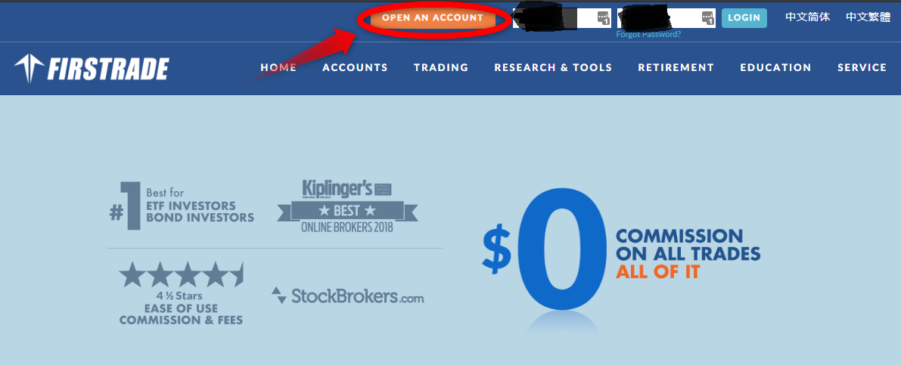
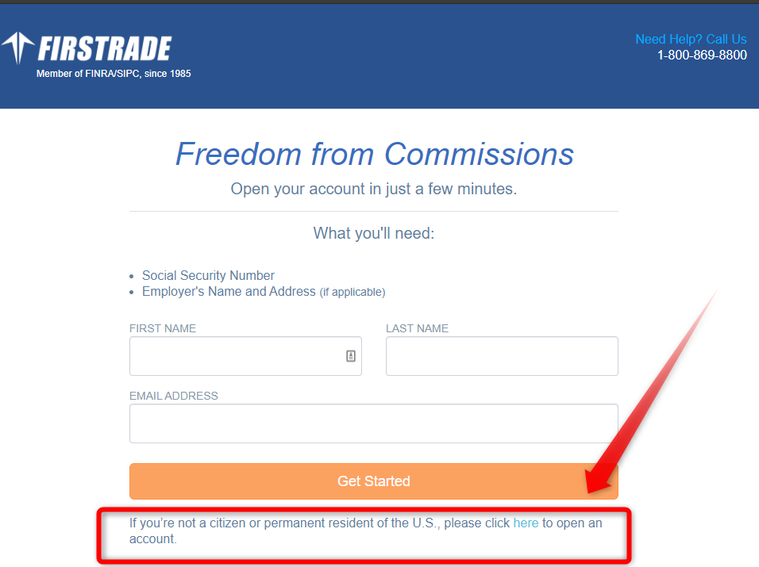
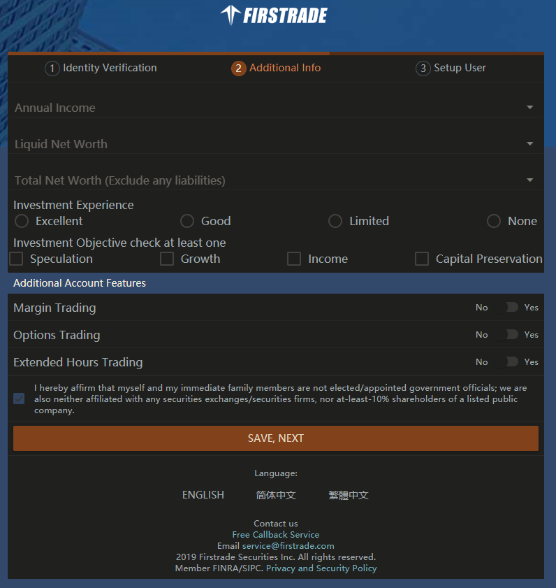

Firstrade口座開設したときのメモ

Trancferwiseでのユニオンバンクへの送金も無事に完了したので、Firstrade口座開設したときのメモ。
TrancferWiseで送金してから、ユニオンバンクでの着金を確認できたので、今度はFirstradeの口座開設にうつります。
スクリーンショットをとりながらやっていきましたが、ChromeでDark Readerを使ってダークモードにしたままスクショとってしまったのがあってとても見づらいと思います。すいません💦。
Firstradeのサイトに行く
まずはFirstrade Securities - Online Stock Trading, Investing, Online Brokerにアクセス。
ページ上部【OPEN AN ACCOUNT】を押す。 
そうすると、下記のようなページにうつります。

米国の市民または永住者でない方は、上の画像の一番下の - If you’re not a citizen or permanent resident of the U.S., please click here to open an account. の【here】の部分をクリックします。
尚、これ以降は、米国の市民または永住者でない人向けの説明になります。
すると電話番号認証のページにうつるので、これを済ませてください。
口座開設手続きするにあたってパスポートとネットワークと3分くらい必要です。
完了すると下記のページへ。

口座開設手続きするにあたって
- Please have your passport ready. You must be 18 years of age or older to open an account. パスポートを準備してください。18以上である必要がある。
- To upload documents, we recommend using Wifi, 4G or 3G network ドキュメントをアップロードする為、ネットワークが必要。
- You can open an account in just 3 minutes, click on the button below to continue 3分くらいでできるよ。
って感じですかね。
NEXTで次に行きます。
パスポートのアップロード
次のページはパスポートの顔写真の映ってるページをスキャンまたは撮影してアップロードします。

2枚アップロードする感じになっていますが、2枚目はパスポートのサインが記入してあるページのようです。 日本国のパスポートは写真のページにサインも書かれていますので、2枚目は必要ないと思います。私は顔写真のページしかアップロードしませんでした。
【SAVE,NEXT】を押して次へ。
個人情報を入力
個人情報を入力していきます。
Foreign Tax ID Number(個人情報を入力)という項目ですが、これに関しては日本には納税者番号ってないですよね。 ただ私は、ユニオンバンクの口座開設の際にも、ストックフォトでも毎年、W-8BENを提出していますがこの時、マイナンバーを書いています。
だからここでもマイナンバーを書きましたが、それが推奨されているというわけではないらしくネットでの情報では、マイナンバーの問い合わせ先に問い合わせても税務署に問い合わせても、あいまいな回答しか返ってこなかった、という情報がありました。
マイナンバーを海外のわけのわからない人に教えるのは危険だという意見もあるみたいです。
私はマイナンバーを入力してNEXTボタンをおして進めたのですが、空欄のまま、もしくは「I do not have a tax ID」と入力して先に進めるのかどうかはわかりません。

【SAVE,NEXT】を押して次へ。
資産情報、投資経験、と口座の種類を入力
ここでは Liquid Net Worth （流動資産）＜ Total Net Worth （総資産）で書く。
Investment Experience ですが私は投資経験2年なので、Limited としました。基準はよくわかりません。
Additional Account Featuresは私はいずれオプション取引もやってみたかったので、すべてYESとしました。MarginTradingはいらなかったかも？
一番下はインサイダー取引にあたらないかの確認ですので、大丈夫だったらチェック。

【SAVE,NEXT】を押して次へ。
UserIDとPasswordを決めて、4桁のPINコード
ここからスクリーンショットをとるのを忘れたらしいですが、UserIDとPasswordを決めて、4桁のPINコードを決めて、【SAVE,NEXT】を押して次へ。
利用規約と同意ではE-Signatureでサインをします。
その次のページは、利用規約のようなものがでてきて目を通します。
読んで同意するなら、プラスボタンを押すとE-Signatureを書く画面になりますので、パスポートと同じサインを書きます。
私は急に出てきてびっくりしたんですが、今さらIpadで開いてApplepencilで書くわけにもいかず、マウスでふにゃふにゃした文字でできるだけ丁寧にしてみました。 できたら右上のSUBMITを押します。
確かこの後かこの前か忘れたけれど、マージントレーディングと、オプショントレーディングの同意書もあったように思います。
いくつかチェック項目があって、インサイダーでないことの確認とかだったと思います。
わからない英語の意味を調べたりするので私の場合はここで結構時間がかかったりして、スクショも忘れました！
完了
最後に自分のアカウントナンバーが表示されて終了です。 3分では全然終わらなかったです！
すぐに送金方法の書かれたメールが来ますのでこのまま送金手続きにうつりたいところですが、私はユニオンバンクからACH送金の手続きをしようとしたところ、手続きに必要なStatementがまだ発行されていませんでした。 月ごとの発行なので、ユニオンバンクのアカウントができたのが今月なので、当たり前ですね💦。 Statementが発行されてから、またあらためてACH送金の手続きをしたいと思います。